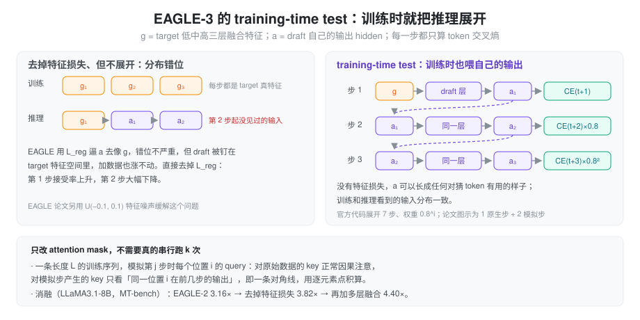

系列总览见 投机解码方案对比。前置：Medusa、EAGLE 与 EAGLE-2、MTP。
问题：EAGLE 加数据也涨不动
EAGLE-3（Li 等，arXiv 2503.01840，NeurIPS 2025）的出发点是一个反直觉的观察：给 EAGLE 的 draft 喂更多训练数据，收益只有一点点。作者把原因归到两处：
- 特征回归损失限制了 draft 的表达能力。 EAGLE 要求 draft 输出「逼近 target 的下一个末层特征」（L_reg），draft 的 hidden 被钉死在 target 特征的空间里。但 draft 真正要做的只是猜对 token，特征长什么样无所谓。
- 末层特征只为下一个 token 服务。 target 的末层被训练成「马上要投到词表上」，对 t+2、t+3 的信息已经被挤掉了。draft 要往后多猜几步，最好看中间层。
抽象：只预测 token，并让训练和推理看到同样的输入
直接去掉 L_reg 并不行。论文的消融显示，去掉之后第 1 步接受率上升了，但第 2 步一塌糊涂：
- 训练时，draft 每一步的输入都是 target 的真实特征。
- 推理时，第 2 步开始输入是 draft 自己上一步的输出。
- 以前有 L_reg 约束，自己的输出至少「长得像」target 的特征；去掉之后两者分布完全不同，第 2 步就是在没见过的输入上推理。
解法叫 training-time test：训练时就把推理过程展开。第 1 步用 target 特征，第 2、3……步把 draft 自己的输出 a 喂回去当输入，在每一步都对 token 算交叉熵。这样 draft 在训练时就见过「自己的输出当输入」的分布，也就不再需要 L_reg 把输出拉回 target 空间。

实现上只需要改 self-attention 的 mask：模拟步里，query 对「原始数据」位置正常因果注意，对模拟步自己产生的 key 只看对角线（同一个位置在前几步的输出），这部分用逐元素点积算，不必真的做一次完整的 attention。官方代码展开 7 步，第 i 步损失权重 0.8^i（论文正文没有写这两个值）。
与同期 HASS 的区别：HASS 也在训练里模拟多步，但保留了特征损失和末层输入；EAGLE-3 两者都去掉了。
draft 结构
- 多层特征融合：从 target 一次前向里取低、中、高三层的 hidden（官方代码里是第 2、N/2、N−3 层之前），拼成 3h，过一个 FC 压回 h，得到 g。
- g 和刚采出 token 的 embedding 各自 RMSNorm 后拼成 2h，直接作为唯一一层 decoder 的 qkv 输入（代码里没有单独的 2h → h FC）。
- 输出 a 过 lm_head 得 token；下一步 a 代替 g 作为输入。
- embedding 从 target 加载并冻结；lm_head
是新的可训练层，不再共享 target
的。官方代码还把 lm_head 缩成小词表（LLaMA3.1-8B：32000 vs
128256），取训练数据里最高频的 token，
d2t/t2d映射回 target 词表。这是代码里的工程优化，论文没有作为贡献提出。
下图右列就是 EAGLE-3，可以和 EAGLE、DeepSeek MTP 对照着看：

训练与结果
- 数据：ShareGPT（约 6.8 万）+ UltraChat-200K（约 46.4 万），回复由 target 重新生成，约是 EAGLE 的 8 倍。R1-Distill 的 draft 另加了数学推理数据。
- scaling：论文图 1 显示新设计下加速比随训练数据量持续上升，而 EAGLE 没有这个趋势。这正是去掉 L_reg 的回报。
- 消融（LLaMA3.1-8B，MT-bench）：EAGLE-2 3.16× → 去掉特征损失 3.82× → 加多层融合 4.40×。
- 五任务平均（T=0）：Vicuna 13B 5.51×（τ 6.62），LLaMA3.1-8B 4.44×，LLaMA3.3-70B 4.12×；最好的单项是 Vicuna 13B HumanEval 6.47×，也就是摘要里的「最高 6.5×」。
- 大 batch：SGLang 团队在 H100、LLaMA3.1-8B、长度 3 的链上测得 bs=64 时 1.38×，而 EAGLE 只有 0.99×。
局限：没测 405B、671B 这种规模；batch 越大收益越小；服务化测试用的是链而不是树。 ### 在 SGLang 里
EAGLE3 是独立的枚举值，但 worker 和 EAGLE
共用 EAGLEWorkerV2，树构造、verify、draft
extend 完全相同（见 上一篇）。差别集中在两处：target
要多吐几层 hidden，draft 模型换成
models/llama_eagle3.py。
target 侧的多层捕获。
set_eagle3_layers_to_capture（如
models/llama.py）在 draft
配置没给层号时默认捕获
[2, N // 2, N − 3]；配置里给了
eagle_aux_hidden_state_layer_ids 时每个加
1，因为 SGLang 在「第 i 层之前」捕获，等价于第 i−1
层的输出。这些 hidden 在 prefill 和 verify 时顺带拼好，交给
draft。
draft 侧的结构和论文 / 官方代码一致：
fc = Linear(target_h × k, h)，k 默认 3，可选每段一个fc_norm。fc只在输入宽度不等于 h 时才执行，所以它只作用于第一步；之后喂的是 draft 自己输出的 hidden，宽度已经是 h，直接跳过。- 首层 decoder 的 qkv 输入宽度是
2h：
cat(input_layernorm(emb), hidden_norm(h))，最后有 final norm。 - lm_head 大小是
draft_vocab_size；checkpoint 里的d2t加载后变成hot_token_id = d2t + arange，用来把 draft 词表下标翻译回 target 词表。没有配置draft_vocab_size时才从 target 加载 lm_head（load_lm_head_from_target）。所以 EAGLE-3 默认只共享 embedding。 - 可选 sliding window，长上下文时 draft KV 可以按窗口分配。
参数上 EAGLE-3 沿用 EAGLE 的 (steps, topk, draft tokens)
与默认值。论文里的大 batch 结论在 SGLang 里也成立：大 batch
时应该用 topk = 1 的链，或打开
--speculative-adaptive，按 batch size
分桶自动调 steps（只对 topk = 1 的 EAGLE / EAGLE3
生效）。
小结
EAGLE-3 的关键一步是承认「draft 只需要猜对 token，不需要像 target」。去掉特征回归之后，draft 的输入就不必局限于末层特征，可以融合低中高三层；为了弥补训练和推理输入分布的差异，用 training-time test 在训练时就展开多步。回报是 draft 能随数据量持续变强，并在大 batch 下仍有收益。但它仍是串行 draft，k 个 token 要 k 次前向，k 很难开大。下一篇 DFlash 换了一个思路：一次前向出一整块。